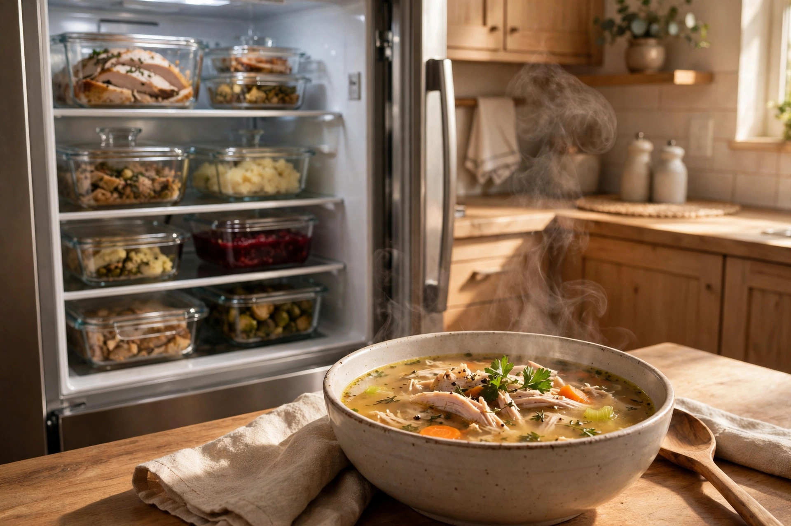

Leftover game plan: safe storage and second-day meals

The best part of Thanksgiving isn't the dinner — it's the week after. But leftovers are only a gift if they're stored safely. The rules below are the widely accepted food-safety basics; when in doubt, check your government's current food-safety guidance rather than a memory of what grandma did.
Monday night: the 20-minute reset
The single most important leftover rule is about timing: get perishable food into the fridge within about 2 hours of serving. The post-dinner conversation is lovely, but bacteria don't care about your stories. Set a quiet mental timer when the meal ends.
- Carve the turkey off the bone. A whole carcass cools slowly and hogs the fridge. Slice or shred the meat; save the bones separately for stock.
- Use shallow containers. Food cools faster in shallow layers than in one deep pot — faster cooling means safer food. Glass containers with lids are ideal; zip-top bags work too.
- Label everything. A piece of tape with the contents and the date takes five seconds and ends all Thursday-night fridge archaeology.
- Cool stock quickly. If you simmer the carcass Monday night, get the stock into shallow containers and refrigerate it promptly — don't leave a big pot cooling on the counter overnight.
How long things keep
These are the standard, widely published ranges:
| Food | Fridge | Freezer (best quality) |
|---|---|---|
| Cooked turkey | 3–4 days | 3–4 months |
| Stuffing, mashed potatoes, cooked vegetables | 3–4 days | 1–3 months |
| Gravy | 3–4 days | 2–3 months |
| Cranberry sauce | 7–10 days | Freezes well for months |
| Pie (pumpkin/pecan) | 3–4 days | 1–2 months |
Reheating: hot all the way through
Reheat leftovers until they're steaming hot throughout — 165°F (74°C) if you're checking with a thermometer. Sauces, soups, and gravy should come to a rolling boil. Only reheat what you'll eat; reheating the same portion repeatedly is where quality and safety both fall apart. And thaw frozen leftovers in the fridge overnight, not on the counter.
Five second-day meals worth planning for
- The proper leftover sandwich. Turkey, stuffing, cranberry sauce, and a smear of mayo on good bread — ideally the rolls from yesterday, split and toasted. This is the canonical day-after lunch for a reason.
- Turkey soup. The carcass you saved becomes stock; the stock plus shredded turkey, leftover vegetables, and some noodles or rice becomes the soup that justifies the entire bird. Add the noodles separately if you're freezing portions — they go mushy on reheating.
- Thanksgiving shepherd's pie. Chop leftover turkey into the base, top with the mashed potatoes, bake until the top crisps. Two leftovers, one dish, zero extra shopping.
- Turkey pot pie or hand pies. Leftover turkey and vegetables in gravy under a pastry crust. Hand pies (folded pastry pockets) are freezer-friendly lunch gold.
- The clean-out-the-fridge hash. Diced potatoes, turkey, Brussels sprouts or green beans, all crisped in a hot skillet and topped with a fried egg. This is Tuesday-night dinner solving itself.
Freezing for later
Portion leftovers into meal-sized amounts before freezing — a single-person soup portion thaws faster and wastes less than a giant block. Press zip-top bags flat so they stack, squeeze out the air, and label with contents and date. Frozen turkey keeps its best quality for about 3–4 months. Cranberry sauce freezes beautifully and thaws into something that tastes freshly made — freeze it in small jars and thank yourself at Christmas.
Start overBack to the long-weekend hosting timeline →